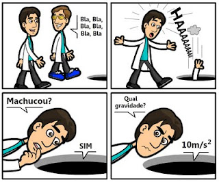

O que é a Gravidade?

Gravidade é o fenômeno de atração que comanda a movimentação dos objetos. Na Terra, a gravidade é a propriedade que faz com que os corpos se dirijam para o centro da terra.
A gravidade atua sobre a massa de um objeto e quanto maior for a massa desse objeto, maior é a sua força gravitacional. Como a massa da Terra é superior à de uma pessoa, a pessoa é "atraída" para o seu centro, o que explica a razão dos objetos caírem. Cada objeto possui um centro de gravidade, ou seja, o ponto onde é exercida a força da gravidade.
A Terra também exerce atração sobre a Lua e por isso ela orbita à sua volta. Como o Sol tem uma massa muito superior em comparação com a Terra, esta é atraída pelo Sol, orbitando ao seu redor.
O primeiro a identificar o fenômeno da gravidade foi Isaac Newton, que publicou um trabalho sobre a gravitação em 1687. Mais tarde, em 1915, Albert Einstein abordou o tópico da gravidade na Teoria da Relatividade. Para Einstein, o espaço e o tempo são como dois fios entrelaçados que formam o "tecido" espaço-tempo. De acordo com o renomado físico, a gravidade não é vista como uma força, mas como uma distorção da quarta dimensão conhecida como "espaço-tempo".
Gravidade é também um substantivo feminino que descreve uma situação grave, séria ou negativa. Ex: No meio da confusão, o cidadão foi ferido com gravidade.